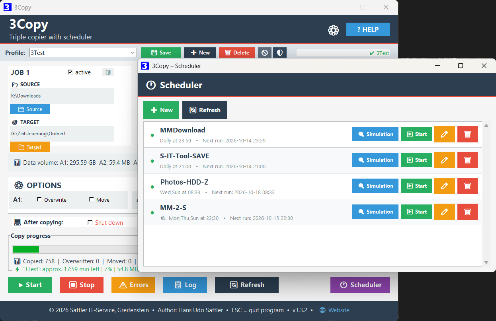
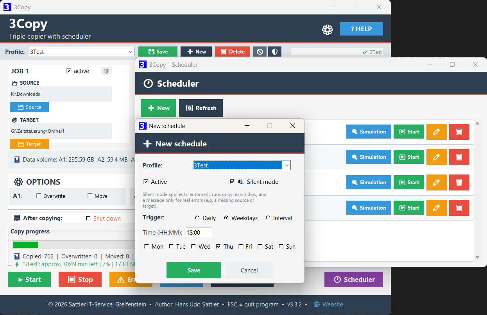
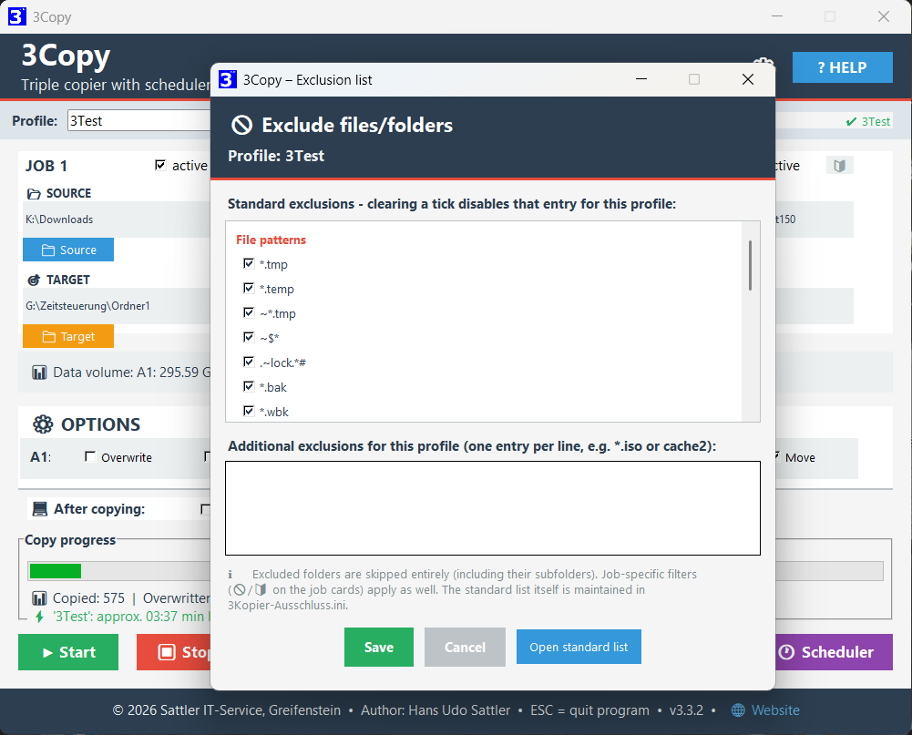
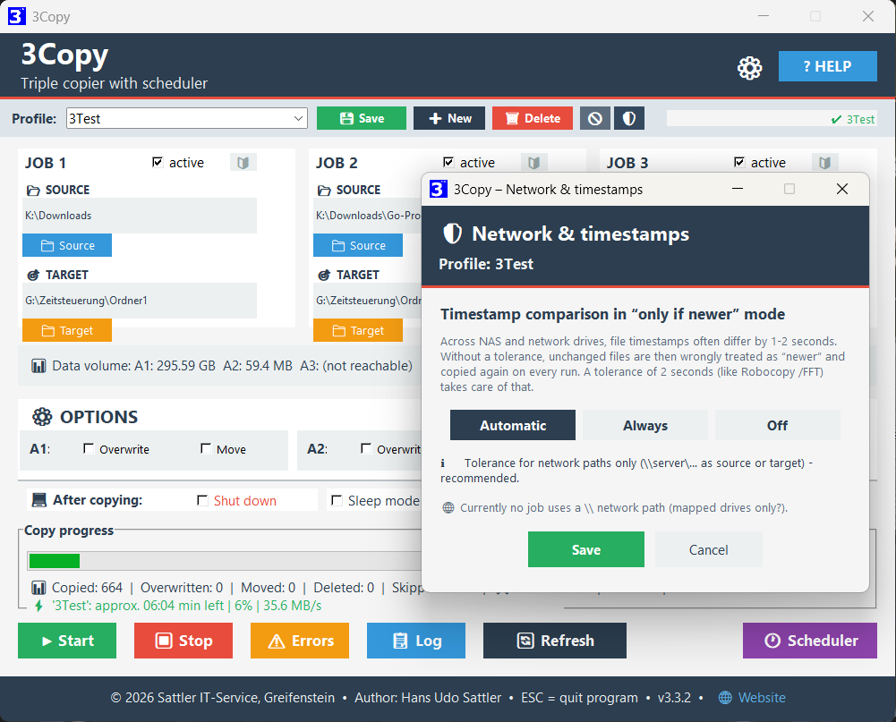
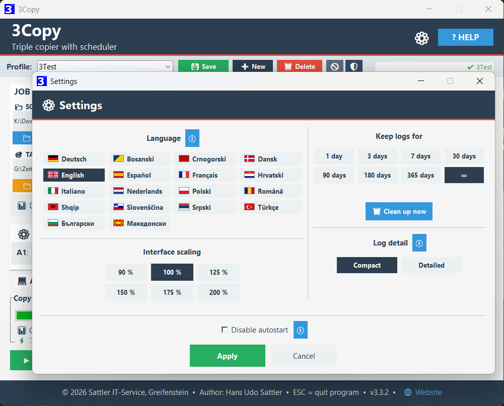

Three jobs
Up to three independent copy or move jobs in a single run – ideal for NAS, USB sticks and cloud folders. Tip from practice: since the number of profiles is unlimited, any number of independent copy tasks is possible in effect – not just three.
Options per job
Overwrite (always, or only if newer) and Move can be set separately for each job. The 🔰 symbol on the job card also lets you exclude files per job or copy only selected file types (for example job 1 only *.pdf, job 2 only *.jpg).
Excluding files & folders NEW
Keep particular files (such as *.tmp, *.iso) and whole folders (such as browser caches) out of the copy. Comes with sensible defaults and can be adjusted per profile. Excluded cache folders are skipped entirely – which saves noticeable time with browser profiles.
Network & timestamps NEW
Across NAS and network drives, file timestamps often differ by one or two seconds for technical reasons. So that unchanged files are not needlessly copied again on every run in “only if newer” mode, 3Copy evens this out with a tolerance of two seconds – adjustable per profile via the 🛡 symbol (Automatic / Always / Off).
Profiles
Save copy configurations as .3ko profiles. Selecting one in the drop-down loads it immediately – no separate “Load” click needed.
Block-wise copying & real progress NEW
Files are copied in blocks rather than in one go – so the progress bar moves visibly even within a single very large file, and “Stop” takes effect immediately instead of only after that file is finished.
Scalable interface
Fixed scaling steps from 90–200 % in the settings (⚙). Also adjustable: how long logs are kept (1 day up to unlimited), including a clean-up-now function.
Shut down or sleep NEW
Optional: shut the PC down or send it to sleep automatically after an error-free run – with a confirmation dialog. The two options are mutually exclusive.
Settings remembered
All paths, active states and options are saved automatically when the program ends and restored at the next start.
Automatic scheduler NEW
Any number of profiles, each with a schedule of its own (daily, on selected weekdays or at a fixed interval) – in effect an unlimited number of automated copy tasks, without any manual intervention.
Silent mode NEW
Automatic runs can take place entirely without a window in the background – only a real error (source or target not reachable, for example) brings up a short message.
Independent progress window NEW
If a schedule runs without silent mode, a small progress window of its own opens – the main window with your current work stays completely untouched. The window has its own taskbar entry and can be minimised; its close button (X) acts like “Stop” and ends only that one run.
Tray & autostart NEW
With an active schedule, 3Copy keeps running in the background instead of quitting when the window is closed, and starts with Windows automatically when needed.
3Copy speaks German, English, French, Spanish, Dutch, Italian, Croatian, Slovenian, Serbian, Bosnian, Montenegrin, Bulgarian, Macedonian, Albanian, Romanian, Turkish, Polish and Danish – interface, dialogs, scheduler and logs. The language is chosen during installation and can be changed at any time under ⚙. The program name changes with it: 3Kopier, 3Copy, 3Copier, 3Copiar, 3Kopieer, 3Copia, 3Kopiraj, 3Copiază, 3Kopyala, 3Kopiuj.
Every language has a help page of its own – it comes with the download and opens in the program via the ? Help button. All eighteen versions can also be read here on this page.
English
Twelve chapters. Everything is explained: the three jobs, filters and profiles, the scheduler, long paths and the logs.
Deutsch
Zwölf Kapitel. Erklärt wird alles: die drei Aufträge, Filter und Profile, die Zeitsteuerung, lange Pfade und die Protokolle.





The current version and the help file are in the release area on GitHub.
| Component | Requirement |
|---|---|
| Operating system | Windows 10 / Windows 11 (64-bit) |
| Rights | No administrator rights required |
| Installation | None – unzip and start |
| Contents | EXE, help pages, change history and Lizenz-Disclaimer.txt |
- New: twelve further languages – Croatian, Slovenian, Serbian, Bosnian, Montenegrin, Bulgarian, Macedonian, Albanian, Romanian, Turkish, Polish and Danish. The tool now speaks eighteen languages
- New: every language has a help page and a change history of its own
- New: tidy program folder – language files, help pages, settings and profiles are in the folders Lang, Help, Config and Profile; existing installations sort themselves at the first start
- New: the setup speaks eighteen languages as well
- The range of functions is unchanged – existing profiles, filters and settings stay as they are
All earlier versions are in the full change history – English · Deutsch. In the other sixteen languages it comes with the download.
All reviews appeared in German; quotations are translated.
community
CHIP editors
review
of the Week
A small contribution is always appreciated:
PayPal – tool-entwicklung@sattler-it.de